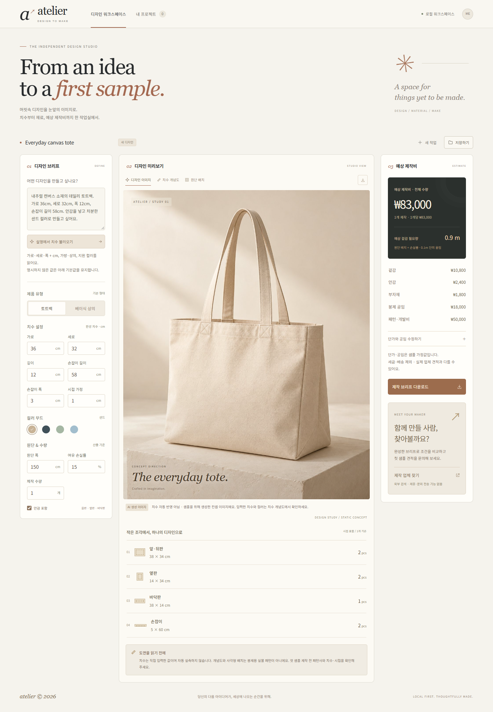

LAUNCHPAD · 실제 실행과 검증 기록내 디자인 견적노트
가방/옷 디자인을 설명해주면 도면을 짜주고 얼마나 재료가 들어갈지 치수도 정확하게 재주고 예상 비용까지 예측해주는 그런 앱 만들고 싶어. 제작해주는 곳 연결까지 해주면 좋고
ChatGPT로 로그인한 로컬 Codex 구독을 사용해 기획과 디자인 코드를 생성했습니다. 치수·원단 배치·비용 계산과 조작 기능은 검증된 패션 템플릿을 사용합니다.
실행 가능한 소스 다운로드 · 검증 중 내보낸 제작 브리프 · 치수 개념도 · 전체 검증 기록
발견한 문제와 개선
처음에는 일반 작업 관리 앱이 생성되어 핵심 요구사항을 놓쳤습니다. 패션 기능을 추가한 뒤 구독 생성에서 긴 전체 코드 작성이 5분 제한에 걸렸습니다. 계산 코드를 보존하고 AI가 디자인 변경만 작성하도록 범위를 줄인 후 다시 생성했습니다.
브라우저 검증
| 검사 | 결과 |
|---|
| 기본 토트백 비용 83,000원·겉감 0.9m | 통과 |
| 자연어의 명시 치수를 도면에 반영 | 통과 |
| 단가 2배 변경 시 재료비만 정확히 증가 | 통과 |
| 재단 불가능한 폭은 산출·다운로드 차단 | 통과 |
| 프로젝트 저장·새로고침·다시 열기 | 통과 |
| 제작 브리프에 치수·계산·한계를 내보내기 | 통과 |
| 실제 SVG 도면 파일 다운로드 | 통과 |
| 상의 전환과 계산 갱신 | 통과 |
| 업체 찾기는 검색 연결임을 표시 | 통과 |
| 저장한 프로젝트 삭제 | 통과 |
| 모바일 390px에서 가로 넘침 없음 | 통과 |
| 브라우저 JavaScript 오류 없음 | 통과 |
사용 범위
실물 자동 실측 아님 · 봉제용 생산 패턴 아님 · 실시간 업체 견적 및 계약 중개 아님. 기본 치수·시접·손실률·단가·공임은 사용자가 검토하는 가정입니다. 업체 찾기는 검색 연결이며 자동 발주·계약 중개를 포함하지 않습니다.
이미지 모델로 다시 만든 디자인
Codex 내장 image_gen으로 토트백·상의 콘셉트를 생성해 실제 앱에 적용했습니다. 이미지는 정적 레퍼런스이며 입력 치수 변경은 치수 개념도와 계산에 반영됩니다. 기존 계산·저장·다운로드를 포함한 브라우저 검사 13개를 통과했습니다.
생성 프롬프트와 이미지 기록
실제 결과 화면

검증일 2026-10-04T05:23:40.949Z